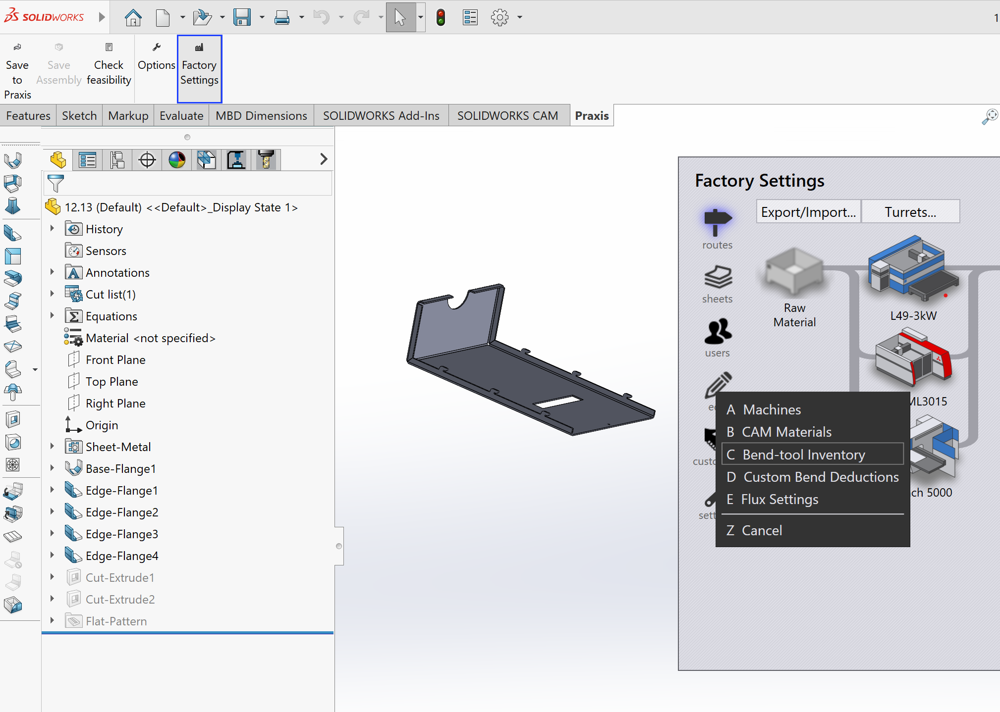

Fabrieksinstellingen
Deze instelling stelt gebruikers in staat om zowel TruSmartCAM fabrieksconfiguraties als TecZone instellingen rechtstreeks vanuit SolidWorks te bekijken en bij te werken. Dit omvat parameters zoals TecZone materialen, buigcatalogi, aangepaste buigaftrekwaarden en andere machinegerelateerde configuraties die van invloed zijn op onderdeel haalbaarheid en productie gereedheid.
De functie biedt een handige manier om productie instellingen te bekijken of aan te passen zonder de CAD omgeving te verlaten—vooral bij het uitvoeren van haalbaarheid controles of ontwerpverbeteringen die afhankelijk zijn van fabrieksspecifieke configuraties.

Toegang tot de Fabrieksinstellingen vanuit SolidWorks is bijzonder nuttig wanneer:
-
Een haalbaarheid controle mislukt vanwege verouderde of incorrecte materiaal-/buig instellingen.
-
Ontwerpingenieurs buigradii, aftrekwaarden of machinelimieten moeten verifiëren zonder te schakelen tussen meerdere applicaties.
-
Samenwerking tussen de CAD en CAM teams snelle kruisverificatie van productieparameters vereist.
|
Beheerdersrechten zijn vereist om machine- of fabriek instellingen te wijzigen of op te slaan. Gebruikers zonder beheerdersrechten kunnen nog steeds alle configuraties ter referentie bekijken. |